<!DOCTYPE html>
<html lang="zh-CN">
<head>
<meta charset="UTF-8">
<meta name="viewport" content="width=device-width, initial-scale=1.0">
<title>Foundry Toolkit 中的模型转换快速入门。 - VS Code 中文文档</title>
<style>
* { margin:0; padding:0; box-sizing:border-box; }
body { font-family:-apple-system,BlinkMacSystemFont,'Segoe UI',Roboto,Oxygen,Ubuntu,Cantarell,sans-serif; color:#333; line-height:1.6; background:#f5f5f5; }
.layout { display:flex; min-height:100vh; }
.sidebar { width:280px; background:#2c2c32; color:#ccc; padding:0 0 20px 0; position:fixed; top:0; left:0; height:100vh; overflow-y:auto; flex-shrink:0; }
.sidebar-header { padding:16px 20px 8px; border-bottom:1px solid #444; margin-bottom:8px; }
.sidebar-header h2 { color:#fff; font-size:16px; display:inline; }
.sidebar-header a { color:#fff; text-decoration:none; }
.sidebar-tools { display:inline; float:right; }
.sidebar-tools button { background:none; border:1px solid #555; color:#aaa; cursor:pointer; padding:0 7px; margin-left:3px; border-radius:3px; font-size:16px; font-weight:700; line-height:1.3; font-family:monospace; }
.sidebar-tools button:hover { background:#3a3a42; color:#fff; border-color:#888; }
.sidebar-section { border-bottom:1px solid #3a3a42; }
.sidebar-section-title { color:#e0e0e0; font-weight:600; font-size:12.5px; padding:8px 20px; cursor:pointer; user-select:none; display:flex; justify-content:space-between; align-items:center; text-transform:uppercase; letter-spacing:0.5px; }
.sidebar-section-title:hover { background:#3a3a42; }
.sidebar-section-title .toggle { color:#888; font-size:10px; transition:transform 0.2s; }
.sidebar-section-title.collapsed .toggle { transform:rotate(-90deg); }
.sidebar-section-content { overflow:hidden; transition:max-height 0.2s ease; }
.sidebar-section-content.collapsed { max-height:0 !important; }
.sidebar a { color:#9ba3b4; text-decoration:none; font-size:12.5px; display:block; padding:3px 20px 3px 28px; }
.sidebar a:hover { color:#fff; background:#3a3a42; }
.sidebar a.active { color:#fff; font-weight:500; background:#3a3a42; }
.sidebar-group-label { color:#888; font-size:11px; padding:6px 20px 2px 24px; text-transform:uppercase; letter-spacing:0.3px; }
.sidebar-sub-title { color:#bbb; font-size:12px; padding:5px 20px 5px 24px; cursor:pointer; user-select:none; }
.sidebar-sub-title:hover { color:#fff; }
.sidebar-sub-title .toggle { font-size:8px; margin-right:4px; transition:transform 0.2s; display:inline-block; }
.sidebar-sub-title.collapsed .toggle { transform:rotate(-90deg); }
.sidebar-sub-content { overflow:hidden; transition:max-height 0.2s ease; }
.sidebar-sub-content.collapsed { max-height:0 !important; }
.content { margin-left:280px; flex:1; max-width:960px; padding:40px 60px; background:#fff; min-height:100vh; }
.content h1 { font-size:32px; font-weight:700; margin-bottom:20px; padding-bottom:12px; border-bottom:1px solid #eee; color:#1a1a1a; }
.content h2 { font-size:24px; font-weight:600; margin:32px 0 12px; color:#1a1a1a; }
.content h3 { font-size:20px; font-weight:600; margin:24px 0 10px; color:#2a2a2a; }
.content h4 { font-size:16px; font-weight:600; margin:20px 0 8px; }
.content p { margin:0 0 14px; font-size:15px; }
.content a { color:#0078d4; text-decoration:none; }
.content a:hover { text-decoration:underline; }
.content code { font-family:'Cascadia Code','Fira Code','Consolas',monospace; background:#f0f0f0; padding:2px 6px; border-radius:3px; font-size:13px; }
.content pre { background:#1e1e1e; color:#d4d4d4; padding:16px; border-radius:6px; overflow-x:auto; margin:14px 0; }
.content pre code { background:none; padding:0; color:inherit; font-size:13px; line-height:1.5; }
.content table { border-collapse:collapse; margin:14px 0; width:100%; font-size:14px; }
.content th, .content td { border:1px solid #ddd; padding:8px 12px; text-align:left; }
.content th { background:#f8f8f8; font-weight:600; }
.content tr:nth-child(even) td { background:#fafafa; }
.content blockquote { border-left:4px solid #0078d4; padding:8px 16px; margin:14px 0; background:#f0f7ff; border-radius:0 4px 4px 0; }
.content blockquote p { margin:0; }
.content img { max-width:100%; border-radius:4px; margin:14px 0; border:1px solid #e0e0e0; }
.content hr { border:none; border-top:1px solid #eee; margin:24px 0; }
.content ul, .content ol { margin:0 0 14px; padding-left:24px; font-size:15px; }
.content li { margin-bottom:4px; }
.content kbd { background:#f0f0f0; border:1px solid #ccc; border-radius:3px; padding:1px 5px; font-size:12px; font-family:monospace; }
.content .setting { color:#c7254e; background:#f9f2f4; }
.breadcrumb { font-size:13px; color:#888; margin-bottom:16px; }
.breadcrumb a { color:#0078d4; }
@media (max-width:768px) { .sidebar { display:none; } .content { margin-left:0; padding:20px; } }
.status-card { background:#f0f7ff; border:1px solid #0078d4; border-radius:8px; padding:20px; margin:20px 0; }
.status-card h3 { margin:0 0 12px; color:#0078d4; }
.status-item { display:flex; align-items:center; margin:6px 0; font-size:14px; }
.status-dot { width:10px; height:10px; border-radius:50%; margin-right:10px; flex-shrink:0; }
.status-dot.done { background:#28a745; }
.status-dot.pending { background:#dc3545; }
</style>
</head>
<body>
<div class="layout">
  <div class="sidebar"><div class="sidebar-header"><h2><a href="../../index.html">📖 VS Code 中文文档</a></h2>
<div class="sidebar-tools"><button onclick="toggleAll(true)" title="全部展开">+</button><button onclick="toggleAll(false)" title="全部折叠">−</button></div></div>
<div class="sidebar-section"><div class="sidebar-section-title" onclick="ts('s-get-started')"><span>Get Started</span><span class="toggle">▼</span></div><div id="s-get-started" class="sidebar-section-content"><a href="../../docs/getstarted/overview.html" class="">Overview</a>
<a href="../../docs/getstarted/getting-started.html" class="">Tutorial</a>
<a href="../../docs/getstarted/introvideos.html" class="">Intro Videos</a>
</div></div>
<div class="sidebar-section"><div class="sidebar-section-title" onclick="ts('s-agents')"><span>Agents</span><span class="toggle">▼</span></div><div id="s-agents" class="sidebar-section-content"><div class="sidebar-group-label">Agents</div>
<a href="../../docs/agents/agents-tutorial.html" class="">Tutorial</a>
<a href="../../docs/agents/agents-window.html" class="">Agents Window</a>
<a href="../../docs/agents/chat-view.html" class="">Chat View</a>
<a href="../../docs/agents/remote-agent-sessions.html" class="">Remote Agent Sessions</a>
<div class="sidebar-subsection"><div class="sidebar-sub-title" onclick="ts('sub-sessions')"><span class="toggle">▶</span> Sessions</div><div id="sub-sessions" class="sidebar-sub-content"><a href="../../docs/agents/sessions/session-insights.html" class="">Session Insights</a>
<a href="../../docs/agents/sessions/session-sync.html" class="">Sync Sessions</a>
</div></div>
<div class="sidebar-subsection"><div class="sidebar-sub-title" onclick="ts('sub-agent-types')"><span class="toggle">▶</span> Agent Types</div><div id="sub-agent-types" class="sidebar-sub-content"><a href="../../docs/agents/agent-types/local-agents.html" class="">Local Agents</a>
<a href="../../docs/agents/agent-types/copilot-cli.html" class="">Copilot CLI</a>
<a href="../../docs/agents/agent-types/cloud-agents.html" class="">Cloud Agents</a>
<a href="../../docs/agents/agent-types/third-party-agents.html" class="">Third-Party Agents</a>
</div></div>
<a href="../../docs/agents/approvals.html" class="">Approvals & Permissions</a>
<a href="../../docs/agents/planning.html" class="">Planning</a>
<a href="../../docs/agents/memory.html" class="">Memory</a>
<a href="../../docs/agents/subagents.html" class="">Subagents</a>
<a href="../../docs/agents/best-practices.html" class="">Best Practices</a>
<a href="../../docs/agents/security.html" class="">Security</a>
<div class="sidebar-group-label">Agent Customization</div>
<a href="../../docs/agent-customization/overview.html" class="">Overview</a>
<a href="../../docs/agent-customization/custom-instructions.html" class="">Instructions</a>
<a href="../../docs/agent-customization/agent-skills.html" class="">Agent Skills</a>
<a href="../../docs/agent-customization/custom-agents.html" class="">Custom Agents</a>
<a href="../../docs/agent-customization/language-models.html" class="">Language Models</a>
<a href="../../docs/agent-customization/mcp-servers.html" class="">MCP</a>
<a href="../../docs/agent-customization/hooks.html" class="">Hooks</a>
<a href="../../docs/agent-customization/agent-plugins.html" class="">Plugins</a>
<a href="../../docs/agent-customization/prompt-files.html" class="">Prompt Files</a>
<div class="sidebar-group-label">Using Chat</div>
<a href="../../docs/chat/chat-overview.html" class="">Overview</a>
<a href="../../docs/chat/chat-sessions.html" class="">Chat Sessions</a>
<a href="../../docs/chat/copilot-chat-context.html" class="">Add Context</a>
<a href="../../docs/chat/chat-tools.html" class="">Tools</a>
<a href="../../docs/chat/inline-chat.html" class="">Inline Chat</a>
<a href="../../docs/chat/review-code-edits.html" class="">Review Edits</a>
<a href="../../docs/chat/chat-checkpoints.html" class="">Checkpoints</a>
<a href="../../docs/chat/chat-artifacts.html" class="">Artifacts Panel</a>
<div class="sidebar-group-label">Concepts</div>
<a href="../../docs/agents/concepts/overview.html" class="">Overview</a>
<a href="../../docs/agents/concepts/language-models.html" class="">Language Models</a>
<a href="../../docs/agents/concepts/context.html" class="">Context</a>
<a href="../../docs/agents/concepts/tools.html" class="">Tools</a>
<a href="../../docs/agents/concepts/agents.html" class="">Agents</a>
<a href="../../docs/agents/concepts/customization.html" class="">Customization</a>
<a href="../../docs/agents/concepts/trust-and-safety.html" class="">Trust & Safety</a>
<div class="sidebar-group-label">Guides</div>
<a href="../../docs/agents/guides/prompt-examples.html" class="">Prompt Examples</a>
<a href="../../docs/agents/guides/context-engineering-guide.html" class="">Context Engineering</a>
<a href="../../docs/agents/guides/optimize-usage.html" class="">Optimize AI Credit Usage</a>
<a href="../../docs/agents/guides/customize-copilot-guide.html" class="">Customize AI</a>
<a href="../../docs/agents/guides/test-driven-development-guide.html" class="">Test-Driven Development</a>
<a href="../../docs/agents/guides/notebooks-with-ai.html" class="">Edit Notebooks with AI</a>
<a href="../../docs/agents/guides/test-with-copilot.html" class="">Test with AI</a>
<a href="../../docs/agents/guides/browser-agent-testing-guide.html" class="">Test Web Apps with Browser Tools</a>
<a href="../../docs/agents/guides/debug-with-copilot.html" class="">Debug with AI</a>
<a href="../../docs/agents/guides/mcp-developer-guide.html" class="">MCP Dev Guide</a>
<a href="../../docs/agents/guides/monitoring-agents.html" class="">OpenTelemetry Monitoring</a>
<div class="sidebar-group-label">Troubleshooting</div>
<a href="../../docs/agents/agent-troubleshooting/chat-debug-view.html" class="">Debug Chat Interactions</a>
<a href="../../docs/agents/agent-troubleshooting/troubleshooting.html" class="">Troubleshooting</a>
<a href="../../docs/agents/agent-troubleshooting/faq.html" class="">FAQ</a>
<div class="sidebar-group-label">Reference</div>
<a href="../../docs/agents/reference/ai-features-cheat-sheet.html" class="">Cheat Sheet</a>
<a href="../../docs/agents/reference/ai-settings.html" class="">Settings Reference</a>
<a href="../../docs/agents/reference/mcp-configuration.html" class="">MCP Configuration</a>
<a href="../../docs/agents/reference/workspace-context.html" class="">Workspace Context</a>
</div></div>
<div class="sidebar-section"><div class="sidebar-section-title" onclick="ts('s-editor')"><span>Editor</span><span class="toggle">▼</span></div><div id="s-editor" class="sidebar-section-content"><div class="sidebar-group-label">Write code</div>
<a href="../../docs/editing/getting-started.html" class="">Tutorial</a>
<a href="../../docs/editing/userinterface.html" class="">User Interface</a>
<a href="../../docs/editing/tips-and-tricks.html" class="">Tips and Tricks</a>
<a href="../../docs/editing/codebasics.html" class="">Basic Editing</a>
<a href="../../docs/editing/intellisense.html" class="">IntelliSense</a>
<a href="../../docs/editing/ai-powered-suggestions.html" class="">Inline Suggestions</a>
<a href="../../docs/editing/copilot-smart-actions.html" class="">Smart Actions</a>
<a href="../../docs/editing/editingevolved.html" class="">Code Navigation</a>
<a href="../../docs/editing/refactoring.html" class="">Refactoring</a>
<a href="../../docs/editing/userdefinedsnippets.html" class="">Snippets</a>
<div class="sidebar-subsection"><div class="sidebar-sub-title" onclick="ts('sub-workspaces')"><span class="toggle">▶</span> Workspaces</div><div id="sub-workspaces" class="sidebar-sub-content"><a href="../../docs/editing/workspaces/workspaces.html" class="">Overview</a>
<a href="../../docs/editing/workspaces/multi-root-workspaces.html" class="">Multi-Root Workspaces</a>
<a href="../../docs/editing/workspaces/workspace-trust.html" class="">Workspace Trust</a>
</div></div>
<div class="sidebar-group-label">Configure the editor</div>
<a href="../../docs/configure/locales.html" class="">Display Language</a>
<a href="../../docs/configure/custom-layout.html" class="">Layout</a>
<a href="../../docs/configure/keybindings.html" class="">Keyboard Shortcuts</a>
<a href="../../docs/configure/settings.html" class="">Settings</a>
<a href="../../docs/configure/settings-sync.html" class="">Settings Sync</a>
<div class="sidebar-subsection"><div class="sidebar-sub-title" onclick="ts('sub-extensions')"><span class="toggle">▶</span> Extensions</div><div id="sub-extensions" class="sidebar-sub-content"><a href="../../docs/configure/extensions/extensions.html" class="">Overview</a>
<a href="../../docs/configure/extensions/extension-marketplace.html" class="">Extension Marketplace</a>
<a href="../../docs/configure/extensions/extension-runtime-security.html" class="">Extension Runtime Security</a>
</div></div>
<a href="../../docs/configure/themes.html" class="">Themes</a>
<a href="../../docs/configure/profiles.html" class="">Profiles</a>
<div class="sidebar-subsection"><div class="sidebar-sub-title" onclick="ts('sub-accessibility')"><span class="toggle">▶</span> Accessibility</div><div id="sub-accessibility" class="sidebar-sub-content"><a href="../../docs/configure/accessibility/accessibility.html" class="">Overview</a>
<a href="../../docs/configure/accessibility/voice.html" class="">Voice Interactions</a>
</div></div>
<a href="../../docs/configure/command-line.html" class="">Command Line Interface</a>
<a href="../../docs/configure/telemetry.html" class="">Telemetry</a>
<div class="sidebar-group-label">Reference</div>
<a href="../../docs/reference/default-keybindings.html" class="">Default Keyboard Shortcuts</a>
<a href="../../docs/reference/default-settings.html" class="">Default Settings</a>
<a href="../../docs/reference/variables-reference.html" class="">Substitution Variables</a>
<a href="../../docs/reference/tasks-appendix.html" class="">Tasks Schema</a>
</div></div>
<div class="sidebar-section"><div class="sidebar-section-title" onclick="ts('s-source-control')"><span>Source Control</span><span class="toggle">▼</span></div><div id="s-source-control" class="sidebar-section-content"><a href="../../docs/sourcecontrol/overview.html" class="">Overview</a>
<a href="../../docs/sourcecontrol/quickstart.html" class="">Quickstart</a>
<a href="../../docs/sourcecontrol/staging-commits.html" class="">Staging & Committing</a>
<a href="../../docs/sourcecontrol/branches-worktrees.html" class="">Branches & Worktrees</a>
<a href="../../docs/sourcecontrol/repos-remotes.html" class="">Repositories & Remotes</a>
<a href="../../docs/sourcecontrol/merge-conflicts.html" class="">Merge Conflicts</a>
<a href="../../docs/sourcecontrol/github.html" class="">Collaborate on GitHub</a>
<a href="../../docs/sourcecontrol/troubleshooting.html" class="">Troubleshooting</a>
<a href="../../docs/sourcecontrol/faq.html" class="">FAQ</a>
</div></div>
<div class="sidebar-section"><div class="sidebar-section-title" onclick="ts('s-terminal')"><span>Terminal</span><span class="toggle">▼</span></div><div id="s-terminal" class="sidebar-section-content"><a href="../../docs/terminal/getting-started.html" class="">Get Started</a>
<a href="../../docs/terminal/basics.html" class="">Terminal Basics</a>
<a href="../../docs/terminal/profiles.html" class="">Terminal Profiles</a>
<a href="../../docs/terminal/shell-integration.html" class="">Shell Integration</a>
<a href="../../docs/terminal/appearance.html" class="">Appearance</a>
<a href="../../docs/terminal/advanced.html" class="">Advanced</a>
</div></div>
<div class="sidebar-section"><div class="sidebar-section-title" onclick="ts('s-debugging')"><span>Debugging</span><span class="toggle">▼</span></div><div id="s-debugging" class="sidebar-section-content"><a href="../../docs/debugtest/debugging.html" class="">Debugging</a>
<a href="../../docs/debugtest/debugging-configuration.html" class="">Debug Configuration</a>
<a href="../../docs/debugtest/tasks.html" class="">Tasks</a>
<div class="sidebar-subsection"><div class="sidebar-sub-title" onclick="ts('sub-guides---tutorials')"><span class="toggle">▶</span> Guides & Tutorials</div><div id="sub-guides---tutorials" class="sidebar-sub-content"><a href="../../docs/agents/guides/debug-with-copilot.html" class="">Debug with AI</a>
</div></div>
</div></div>
<div class="sidebar-section"><div class="sidebar-section-title" onclick="ts('s-testing')"><span>Testing</span><span class="toggle">▼</span></div><div id="s-testing" class="sidebar-section-content"><a href="../../docs/debugtest/testing.html" class="">Testing</a>
<a href="../../docs/debugtest/integrated-browser.html" class="">Integrated Browser</a>
<a href="../../docs/debugtest/port-forwarding.html" class="">Port Forwarding</a>
<div class="sidebar-subsection"><div class="sidebar-sub-title" onclick="ts('sub-guides---tutorials')"><span class="toggle">▶</span> Guides & Tutorials</div><div id="sub-guides---tutorials" class="sidebar-sub-content"><a href="../../docs/agents/guides/test-driven-development-guide.html" class="">Test-Driven Development</a>
<a href="../../docs/agents/guides/test-with-copilot.html" class="">Test with AI</a>
<a href="../../docs/agents/guides/browser-agent-testing-guide.html" class="">Test Web Apps with Browser Tools</a>
</div></div>
</div></div>
<div class="sidebar-section"><div class="sidebar-section-title" onclick="ts('s-enterprise')"><span>Enterprise</span><span class="toggle">▼</span></div><div id="s-enterprise" class="sidebar-section-content"><a href="../../docs/enterprise/overview.html" class="">Overview</a>
<a href="../../docs/enterprise/policies.html" class="">Enterprise Policies</a>
<a href="../../docs/enterprise/ai-settings.html" class="">AI Settings</a>
<a href="../../docs/enterprise/extensions.html" class="">Extensions</a>
<a href="../../docs/enterprise/telemetry.html" class="">Telemetry</a>
<a href="../../docs/enterprise/updates.html" class="">Updates</a>
</div></div>
<div class="sidebar-section"><div class="sidebar-section-title" onclick="ts('s-remote')"><span>Remote</span><span class="toggle">▼</span></div><div id="s-remote" class="sidebar-section-content"><a href="../../docs/remote/remote-overview.html" class="">Overview</a>
<a href="../../docs/remote/vscode-web.html" class="">VS Code for the Web</a>
<a href="../../docs/remote/ssh.html" class="">SSH</a>
<a href="../../docs/remote/ssh-tutorial.html" class="">SSH Tutorial</a>
<a href="../../docs/remote/tunnels.html" class="">Tunnels</a>
<a href="../../docs/remote/dev-containers.html" class="">Dev Containers</a>
<a href="../../docs/remote/wsl.html" class="">WSL</a>
<a href="../../docs/remote/wsl-tutorial.html" class="">WSL Tutorial</a>
<a href="../../docs/remote/codespaces.html" class="">GitHub Codespaces</a>
<a href="../../docs/remote/vscode-server.html" class="">VS Code Server</a>
<a href="../../docs/remote/linux.html" class="">Linux Prerequisites</a>
<a href="../../docs/remote/troubleshooting.html" class="">Tips and Tricks</a>
<a href="../../docs/remote/faq.html" class="">FAQ</a>
</div></div>
<div class="sidebar-section"><div class="sidebar-section-title" onclick="ts('s-advanced-setup')"><span>Advanced Setup</span><span class="toggle">▼</span></div><div id="s-advanced-setup" class="sidebar-section-content"><a href="../../docs/setup/copilot.html" class="">GitHub Copilot Setup</a>
<a href="../../docs/setup/linux.html" class="">Linux</a>
<a href="../../docs/setup/mac.html" class="">macOS</a>
<a href="../../docs/setup/windows.html" class="">Windows</a>
<a href="../../docs/setup/raspberry-pi.html" class="">Raspberry Pi</a>
<a href="../../docs/setup/network.html" class="">Network</a>
<a href="../../docs/setup/portable.html" class="">Portable Mode</a>
<a href="../../docs/setup/additional-components.html" class="">Additional Components</a>
<a href="../../docs/setup/uninstall.html" class="">Uninstall</a>
</div></div>
<div class="sidebar-section"><div class="sidebar-section-title" onclick="ts('s-languages---runtimes')"><span>Languages & Runtimes</span><span class="toggle">▼</span></div><div id="s-languages---runtimes" class="sidebar-section-content"><div class="sidebar-group-label">Language Support</div>
<a href="../../docs/languages/javascript.html" class="">JavaScript</a>
<a href="../../docs/languages/json.html" class="">JSON</a>
<a href="../../docs/languages/html.html" class="">HTML</a>
<a href="../../docs/languages/emmet.html" class="">Emmet</a>
<a href="../../docs/languages/css.html" class="">CSS, SCSS and Less</a>
<a href="../../docs/languages/typescript.html" class="">TypeScript</a>
<a href="../../docs/languages/markdown.html" class="">Markdown</a>
<a href="../../docs/languages/powershell.html" class="">PowerShell</a>
<a href="../../docs/languages/cpp.html" class="">C++</a>
<a href="../../docs/languages/java.html" class="">Java</a>
<a href="../../docs/languages/php.html" class="">PHP</a>
<a href="../../docs/languages/python.html" class="">Python</a>
<a href="../../docs/languages/julia.html" class="">Julia</a>
<a href="../../docs/languages/r.html" class="">R</a>
<a href="../../docs/languages/ruby.html" class="">Ruby</a>
<a href="../../docs/languages/rust.html" class="">Rust</a>
<a href="../../docs/languages/go.html" class="">Go</a>
<a href="../../docs/languages/tsql.html" class="">T-SQL</a>
<a href="../../docs/languages/csharp.html" class="">C#</a>
<a href="../../docs/languages/dotnet.html" class="">.NET</a>
<a href="../../docs/languages/swift.html" class="">Swift</a>
<div class="sidebar-group-label">Node.js / JavaScript</div>
<a href="../../docs/nodejs/working-with-javascript.html" class="">Working with JavaScript</a>
<a href="../../docs/nodejs/nodejs-tutorial.html" class="">Node.js Tutorial</a>
<a href="../../docs/nodejs/nodejs-debugging.html" class="">Node.js Debugging</a>
<a href="../../docs/nodejs/nodejs-deployment.html" class="">Deploy Node.js Apps</a>
<a href="../../docs/nodejs/browser-debugging.html" class="">Browser Debugging</a>
<a href="../../docs/nodejs/angular-tutorial.html" class="">Angular Tutorial</a>
<a href="../../docs/nodejs/reactjs-tutorial.html" class="">React Tutorial</a>
<a href="../../docs/nodejs/vuejs-tutorial.html" class="">Vue Tutorial</a>
<a href="../../docs/nodejs/debugging-recipes.html" class="">Debugging Recipes</a>
<a href="../../docs/nodejs/profiling.html" class="">Performance Profiling</a>
<a href="../../docs/nodejs/extensions.html" class="">Extensions</a>
<div class="sidebar-group-label">TypeScript</div>
<a href="../../docs/typescript/typescript-tutorial.html" class="">Tutorial</a>
<a href="../../docs/typescript/typescript-transpiling.html" class="">Transpiling</a>
<a href="../../docs/typescript/typescript-editing.html" class="">Editing</a>
<a href="../../docs/typescript/typescript-refactoring.html" class="">Refactoring</a>
<a href="../../docs/typescript/typescript-debugging.html" class="">Debugging</a>
<div class="sidebar-group-label">Python</div>
<a href="../../docs/python/python-quick-start.html" class="">Quick Start</a>
<a href="../../docs/python/python-tutorial.html" class="">Tutorial</a>
<a href="../../docs/python/run.html" class="">Run Python Code</a>
<a href="../../docs/python/editing.html" class="">Editing</a>
<a href="../../docs/python/linting.html" class="">Linting</a>
<a href="../../docs/python/formatting.html" class="">Formatting</a>
<a href="../../docs/python/debugging.html" class="">Debugging</a>
<a href="../../docs/python/environments.html" class="">Environments</a>
<a href="../../docs/python/testing.html" class="">Testing</a>
<a href="../../docs/python/jupyter-support-py.html" class="">Python Interactive</a>
<a href="../../docs/python/tutorial-django.html" class="">Django Tutorial</a>
<a href="../../docs/python/tutorial-fastapi.html" class="">FastAPI Tutorial</a>
<a href="../../docs/python/tutorial-flask.html" class="">Flask Tutorial</a>
<a href="../../docs/python/tutorial-create-containers.html" class="">Create Containers</a>
<a href="../../docs/python/python-on-azure.html" class="">Deploy Python Apps</a>
<a href="../../docs/python/python-web.html" class="">Python in the Web</a>
<a href="../../docs/python/settings-reference.html" class="">Settings Reference</a>
<div class="sidebar-group-label">Java</div>
<a href="../../docs/java/java-tutorial.html" class="">Getting Started</a>
<a href="../../docs/java/java-editing.html" class="">Navigate and Edit</a>
<a href="../../docs/java/java-refactoring.html" class="">Refactoring</a>
<a href="../../docs/java/java-linting.html" class="">Formatting and Linting</a>
<a href="../../docs/java/java-project.html" class="">Project Management</a>
<a href="../../docs/java/java-build.html" class="">Build Tools</a>
<a href="../../docs/java/java-debugging.html" class="">Run and Debug</a>
<a href="../../docs/java/java-testing.html" class="">Testing</a>
<a href="../../docs/java/java-spring-boot.html" class="">Spring Boot</a>
<a href="../../docs/java/java-app-mod.html" class="">Modernizing Java Apps</a>
<a href="../../docs/java/java-tomcat-jetty.html" class="">Application Servers</a>
<a href="../../docs/java/java-on-azure.html" class="">Deploy Java Apps</a>
<a href="../../docs/java/java-gui.html" class="">GUI Applications</a>
<a href="../../docs/java/extensions.html" class="">Extensions</a>
<a href="../../docs/java/java-faq.html" class="">FAQ</a>
<div class="sidebar-group-label">C++</div>
<a href="../../docs/cpp/introvideos-cpp.html" class="">Intro Videos</a>
<a href="../../docs/cpp/config-linux.html" class="">GCC on Linux</a>
<a href="../../docs/cpp/config-mingw.html" class="">GCC on Windows</a>
<a href="../../docs/cpp/config-wsl.html" class="">GCC on Windows Subsystem for Linux</a>
<a href="../../docs/cpp/config-clang-mac.html" class="">Clang on macOS</a>
<a href="../../docs/cpp/config-msvc.html" class="">Microsoft C++ on Windows</a>
<a href="../../docs/cpp/build-with-cmake.html" class="">Build with CMake</a>
<a href="../../docs/cpp/cmake-linux.html" class="">CMake Tools on Linux</a>
<a href="../../docs/cpp/cmake-quickstart.html" class="">CMake Quick Start</a>
<a href="../../docs/cpp/cpp-devtools.html" class="">C++ Dev Tools for Copilot</a>
<a href="../../docs/cpp/cpp-ide.html" class="">Editing and Navigating</a>
<a href="../../docs/cpp/cpp-debug.html" class="">Debugging</a>
<a href="../../docs/cpp/launch-json-reference.html" class="">Configure Debugging</a>
<a href="../../docs/cpp/cpp-refactoring.html" class="">Refactoring</a>
<a href="../../docs/cpp/customize-cpp-settings.html" class="">Settings Reference</a>
<a href="../../docs/cpp/configure-intellisense.html" class="">Configure IntelliSense</a>
<a href="../../docs/cpp/configure-intellisense-crosscompilation.html" class="">Configure IntelliSense for Cross-Compiling</a>
<a href="../../docs/cpp/faq-cpp.html" class="">FAQ</a>
<div class="sidebar-group-label">C#</div>
<a href="../../docs/csharp/introvideos-csharp.html" class="">Intro Videos</a>
<a href="../../docs/csharp/get-started.html" class="">Get Started</a>
<a href="../../docs/csharp/navigate-edit.html" class="">Navigate and Edit</a>
<a href="../../docs/csharp/intellicode.html" class="">IntelliCode</a>
<a href="../../docs/csharp/refactoring.html" class="">Refactoring</a>
<a href="../../docs/csharp/formatting-linting.html" class="">Formatting and Linting</a>
<a href="../../docs/csharp/project-management.html" class="">Project Management</a>
<a href="../../docs/csharp/build-tools.html" class="">Build Tools</a>
<a href="../../docs/csharp/package-management.html" class="">Package Management</a>
<a href="../../docs/csharp/debugging.html" class="">Run and Debug</a>
<a href="../../docs/csharp/testing.html" class="">Testing</a>
<a href="../../docs/csharp/cs-dev-kit-faq.html" class="">FAQ</a>
</div></div>
<div class="sidebar-section"><div class="sidebar-section-title" onclick="ts('s-extension-docs')"><span>Extension Docs</span><span class="toggle">▼</span></div><div id="s-extension-docs" class="sidebar-section-content"><div class="sidebar-group-label">Container Tools</div>
<a href="../../docs/containers/overview.html" class="">Overview</a>
<a href="../../docs/containers/quickstart-node.html" class="">Node.js</a>
<a href="../../docs/containers/quickstart-python.html" class="">Python</a>
<a href="../../docs/containers/quickstart-aspnet-core.html" class="">ASP.NET Core</a>
<a href="../../docs/containers/debug-common.html" class="">Debug</a>
<a href="../../docs/containers/docker-compose.html" class="">Docker Compose</a>
<a href="../../docs/containers/quickstart-container-registries.html" class="">Registries</a>
<a href="../../docs/containers/app-service.html" class="">Deploy to Azure</a>
<a href="../../docs/containers/choosing-dev-environment.html" class="">Choose a Dev Environment</a>
<a href="../../docs/containers/reference.html" class="">Customize</a>
<a href="../../docs/containers/bridge-to-kubernetes.html" class="">Develop with Kubernetes</a>
<a href="../../docs/containers/troubleshooting.html" class="">Tips and Tricks</a>
<div class="sidebar-group-label">Data Science</div>
<a href="../../docs/datascience/overview.html" class="">Overview</a>
<a href="../../docs/datascience/jupyter-notebooks.html" class="">Jupyter Notebooks</a>
<a href="../../docs/datascience/data-science-tutorial.html" class="">Data Science Tutorial</a>
<a href="../../docs/datascience/python-interactive.html" class="">Python Interactive</a>
<a href="../../docs/datascience/data-wrangler-quick-start.html" class="">Data Wrangler Quick Start</a>
<a href="../../docs/datascience/data-wrangler.html" class="">Data Wrangler</a>
<a href="../../docs/datascience/pytorch-support.html" class="">PyTorch Support</a>
<a href="../../docs/datascience/azure-machine-learning.html" class="">Azure Machine Learning</a>
<a href="../../docs/datascience/jupyter-kernel-management.html" class="">Manage Jupyter Kernels</a>
<a href="../../docs/datascience/notebooks-web.html" class="">Jupyter Notebooks on the Web</a>
<a href="../../docs/datascience/microsoft-fabric-quickstart.html" class="">Data Science in Microsoft Fabric</a>
<div class="sidebar-group-label">Intelligent Apps</div>
<a href="../../docs/intelligentapps/overview.html" class="">Foundry Toolkit Overview</a>
<a href="../../docs/intelligentapps/copilot-tools.html" class="">Foundry Toolkit Copilot Tools</a>
<a href="../../docs/intelligentapps/create-agents.html" class="">Create Agents</a>
<a href="../../docs/intelligentapps/models.html" class="">Models</a>
<a href="../../docs/intelligentapps/playground.html" class="">Playground</a>
<a href="../../docs/intelligentapps/agentbuilder.html" class="">Agent Builder</a>
<a href="../../docs/intelligentapps/agent-inspector.html" class="">Agent Inspector</a>
<a href="../../docs/intelligentapps/hosted-agents.html" class="">Hosted Agents (Preview)</a>
<a href="../../docs/intelligentapps/evaluation.html" class="">Evaluation</a>
<a href="../../docs/intelligentapps/tool-catalog.html" class="">Tool Catalog</a>
<a href="../../docs/intelligentapps/finetune.html" class="">Fine-Tuning (Automated Setup)</a>
<a href="../../docs/intelligentapps/finetune-legacy.html" class="">Fine-Tuning (Project Template)</a>
<a href="../../docs/intelligentapps/modelconversion.html" class="active">Model Conversion</a>
<a href="../../docs/intelligentapps/tracing.html" class="">Tracing</a>
<a href="../../docs/intelligentapps/profiling.html" class="">Profiling (Windows ML)</a>
<a href="../../docs/intelligentapps/faq.html" class="">FAQ</a>
<div class="sidebar-subsection"><div class="sidebar-sub-title" onclick="ts('sub-reference')"><span class="toggle">▶</span> Reference</div><div id="sub-reference" class="sidebar-sub-content"><a href="../../docs/intelligentapps/reference/FileStructure.html" class="">File Structure</a>
<a href="../../docs/intelligentapps/reference/ManualModelConversion.html" class="">Manual Model Conversion</a>
<a href="../../docs/intelligentapps/reference/ManualConversionOnGPU.html" class="">Manual Model Conversion on GPU</a>
<a href="../../docs/intelligentapps/reference/SetupWithoutAITK.html" class="">Setup Environment Without Foundry Toolkit</a>
<a href="../../docs/intelligentapps/reference/UpdateModelProject.html" class="">Update Project</a>
<a href="../../docs/intelligentapps/reference/TemplateProject.html" class="">Template Project</a>
<a href="../../docs/intelligentapps/reference/migrate-from-visualizer.html" class="">Migrating from Visualizer to Agent Inspector</a>
</div></div>
<div class="sidebar-group-label">Azure</div>
<a href="../../docs/azure/overview.html" class="">Overview</a>
<a href="../../docs/azure/gettingstarted.html" class="">Getting Started</a>
<a href="../../docs/azure/resourcesextension.html" class="">Resources View</a>
<a href="../../docs/azure/deployment.html" class="">Deployment</a>
<a href="../../docs/azure/vscodeforweb.html" class="">VS Code for the Web - Azure</a>
<a href="../../docs/azure/containers.html" class="">Containers</a>
<a href="../../docs/azure/aksextensions.html" class="">Azure Kubernetes Service</a>
<a href="../../docs/azure/kubernetes.html" class="">Kubernetes</a>
<a href="../../docs/azure/mongodb.html" class="">MongoDB</a>
<a href="../../docs/azure/remote-debugging.html" class="">Remote Debugging for Node.js</a>
<div class="sidebar-group-label">Dev Containers</div>
<a href="../../docs/devcontainers/containers.html" class="">Overview</a>
<a href="../../docs/devcontainers/tutorial.html" class="">Tutorial</a>
<a href="../../docs/devcontainers/attach-container.html" class="">Attach to Container</a>
<a href="../../docs/devcontainers/create-dev-container.html" class="">Create Dev Container</a>
<a href="../../docs/devcontainers/containers-advanced.html" class="">Advanced Containers</a>
<a href="../../docs/devcontainers/devcontainerjson-reference.html" class="">devcontainer.json</a>
<a href="../../docs/devcontainers/devcontainer-cli.html" class="">Dev Container CLI</a>
<a href="../../docs/devcontainers/tips-and-tricks.html" class="">Tips and Tricks</a>
<a href="../../docs/devcontainers/faq.html" class="">FAQ</a>
</div></div>
<div class="sidebar-section"><div class="sidebar-section-title" onclick="ts('s-blogs--2026-')"><span>Blogs (2026)</span><span class="toggle">▼</span></div><div id="s-blogs--2026-" class="sidebar-section-content"><a href="../../blogs/2026/01/15/docfind.html" class="">Building docfind</a>
<a href="../../blogs/2026/01/26/mcp-apps-support.html" class="">MCP Apps Support</a>
<a href="../../blogs/2026/02/05/multi-agent-development.html" class="">Multi-Agent Development</a>
<a href="../../blogs/2026/02/26/long-distance-nes.html" class="">Long Distance NES</a>
<a href="../../blogs/2026/03/05/making-agents-practical-for-real-world-development.html" class="">Making Agents Practical</a>
<a href="../../blogs/2026/03/13/how-VS-Code-Builds-with-AI.html" class="">How VS Code Builds with AI</a>
<a href="../../blogs/2026/05/15/agent-harnesses-github-copilot-vscode.html" class="">Agent Harnesses</a>
</div></div>
<div class="sidebar-section"><div class="sidebar-section-title" onclick="ts('s-release-notes')"><span>Release Notes</span><span class="toggle">▼</span></div><div id="s-release-notes" class="sidebar-section-content"><a href="../../release-notes/v1_125.html" class="">v1.125</a>
<a href="../../release-notes/v1_124.html" class="">v1.124</a>
<a href="../../release-notes/v1_123.html" class="">v1.123</a>
<a href="../../release-notes/v1_122.html" class="">v1.122</a>
<a href="../../release-notes/v1_121.html" class="">v1.121</a>
<a href="../../release-notes/v1_120.html" class="">v1.120</a>
<a href="../../release-notes/v1_119.html" class="">v1.119</a>
<a href="../../release-notes/v1_118.html" class="">v1.118</a>
<a href="../../release-notes/v1_117.html" class="">v1.117</a>
<a href="../../release-notes/v1_116.html" class="">v1.116</a>
<a href="../../release-notes/v1_115.html" class="">v1.115</a>
<a href="../../release-notes/v1_114.html" class="">v1.114</a>
<a href="../../release-notes/v1_113.html" class="">v1.113</a>
<a href="../../release-notes/v1_112.html" class="">v1.112</a>
<a href="../../release-notes/v1_111.html" class="">v1.111</a>
<a href="../../release-notes/v1_110.html" class="">v1.110</a>
</div></div>
</div>
  <div class="content">
    <div class="breadcrumb"><a href="../../index.html">首页</a> / docs/intelligentapps / modelconversion</div>
<h1>使用 Foundry Toolkit for VS Code 转换模型</h1>

<p>模型转换是一个集成开发环境，旨在帮助开发者和 AI 工程师在本地 Windows 平台上转换、量化、优化和评估预构建的机器学习模型。它为从 Hugging Face 等来源转换的模型提供了精简的端到端体验，可对其进行优化并支持在搭载 NPU、GPU 和 CPU 的本地设备上进行推理。</p>

<h2>先决条件</h2>

<ul>
<li>安装最新版本的 <a href="../download">Visual Studio Code</a>。</li>
<li>安装 Foundry Toolkit VS Code 扩展。有关详细信息，请参阅<a href="../docs/intelligentapps/overview.md#install-and-setup">安装 Foundry Toolkit</a>。
<h2>创建项目</h2>

</li>
</ul>
<p>在模型转换中创建项目是转换、优化、量化和评估机器学习模型的第一步。</p>

<ol>
<li>打开 Foundry Toolkit 视图，选择 <strong>Models</strong> > <strong>Conversion</strong> 启动模型转换。
</li>
<li>通过选择 <strong>New Model Project</strong> 开始新项目。
</li>
</ol>
<p>    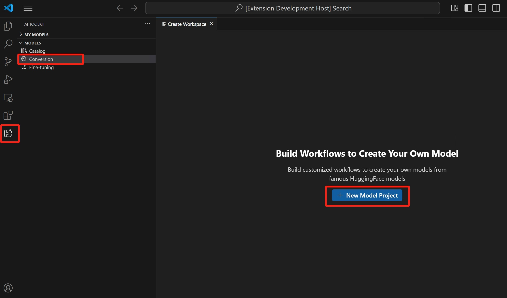</p>

<ol>
<li>选择基础模型。<ul>
<li><code>Hugging Face Model</code>：从支持的模型列表中选择带有预定义配方的基础模型。<ul>
<li><code>Model Template</code>：如果基础模型列表中不包含该模型，可为自定义配方选择一个空白模板（高级场景）。
</li>
</ul>
</li>
</ul>
</li>
</ol>
<p>    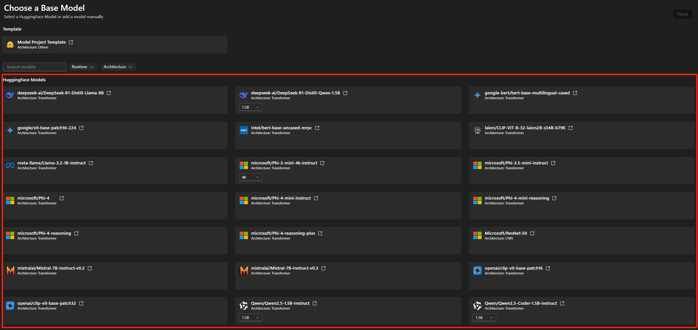</p>

<ol>
<li>输入项目详细信息：唯一的<strong>项目文件夹</strong>和<strong>项目名称</strong>。
</li>
</ol>
<p>    一个以指定项目名称命名的新文件夹将在你选择的位置创建，用于存储项目文件。</p>

<blockquote>[!NOTE]</blockquote>
<blockquote>首次创建模型项目时，设置环境可能需要一些时间。</blockquote>
<blockquote>未完成设置也没关系。你可以在准备就绪后选择重新设置环境。</blockquote>
<blockquote>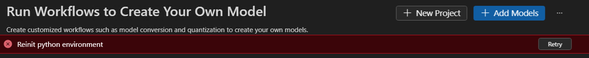</blockquote>
<p>></p>
<blockquote>每个项目中都包含一个 <code>README.md</code> 文件。如果你关闭了它，可以通过工作区重新打开。</blockquote>
<blockquote>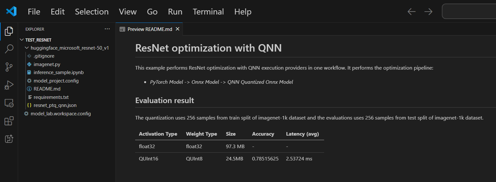</blockquote>

<h3>支持的模型</h3>

<p>模型转换目前支持的模型列表在持续增长，包括 PyTorch 格式的热门 Hugging Face 模型。有关详细的模型列表，请参阅：<a href="https://github.com/microsoft/olive-recipes/blob/main/.aitk/docs/guide/ModelList.md">模型列表</a></p>

<h3>（可选）向现有项目添加模型</h3>

<ol>
<li>打开模型项目。
</li>
<li>选择 <strong>Models</strong> > <strong>Conversion</strong>，然后在右侧面板上选择 <strong>Add Models</strong>。
</li>
</ol>
<p>    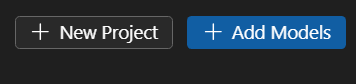</p>

<ol>
<li>选择一个基础模型或模板，然后选择 <strong>Add</strong>。
</li>
</ol>
<p>    一个包含新模型文件的文件夹将在当前项目文件夹中创建。</p>

<h3>（可选）创建新的模型项目</h3>

<ol>
<li>打开模型项目。
</li>
<li>选择 <strong>Models</strong> > <strong>Conversion</strong>，然后在右侧面板上选择 <strong>New Project</strong>。
</li>
</ol>
<p>    </p>

<ol>
<li>或者，关闭当前模型项目并从头开始<a href="#创建项目">创建新项目</a>。
<h3>（可选）删除模型项目</h3>

</li>
<li>打开模型项目，选择 <strong>Models</strong> > <strong>Conversion</strong>。
</li>
<li>在右上方视图中，选择省略号 (<strong>...</strong>)，然后选择 <strong>Delete</strong> 以删除当前选中的模型项目。
</li>
</ol>
<p>    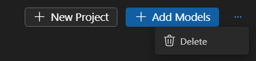</p>

<h3>（可选）更新模型项目</h3>

<p>Foundry Toolkit 更新后，你可能会看到模型项目的 <strong>Need Update</strong> 通知。</p>

<p>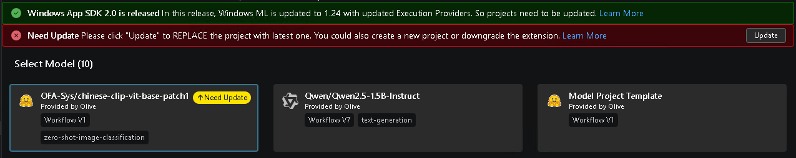</p>

<p>这意味着某些工作流已更新，你可以选择：</p>

<ul>
<li>如果你没有手动修改过工作流，选择 <strong>Update</strong>。</li>
<li>创建一个新的模型项目，将旧模型项目中的更改迁移到新项目中，或反之。</li>
<li>将 Foundry Toolkit 恢复到先前的版本，以便继续使用该版本的工作流。
</li>
</ul>
<p>对于已转换的模型，如果它们正常运行，你仍然可以使用它们。或者你可以重新运行工作流以生成新模型。如果工作流变化不大，由于之前的结果已缓存，速度会很快。</p>

<p>在<a href="../docs/intelligentapps/reference/UpdateModelProject.md">如何更新模型项目</a>中了解更多信息。</p>


<h2>运行工作流</h2>

<p>在模型转换中运行工作流是将预构建的 ML 模型转换为优化和量化的 ONNX 模型的核心步骤。</p>

<ol>
<li>在 VS Code 中选择 <strong>File</strong> > <strong>Open Folder</strong> 以打开模型项目文件夹。
</li>
<li>查看工作流配置。
<ol>
<li>选择 <strong>Models</strong> > <strong>Conversion</strong>。<ol>
<li>选择工作流模板以查看转换配方。
</li>
</ol>
</li>
</ol>
</li>
</ol>
<p>    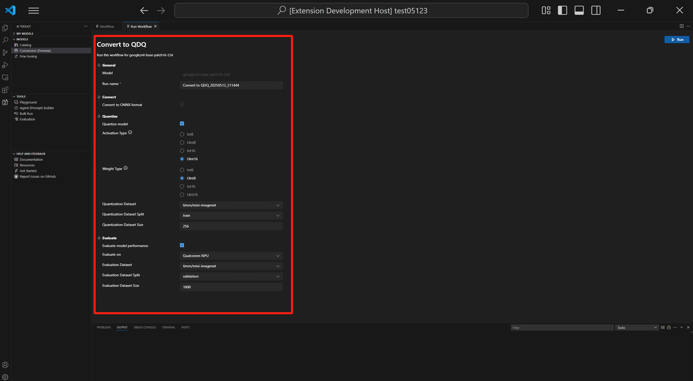</p>

<p>    <strong>转换</strong></p>

<p>    工作流将始终执行转换步骤，将模型转换为 ONNX 格式。此步骤无法禁用。</p>

<p>    <strong>量化</strong></p>

<p>    此部分允许你配置量化参数。</p>

<blockquote>[!Important]</blockquote>
<blockquote><strong>Hugging Face 合规提醒</strong>：在量化过程中，我们需要校准数据集。你可能需要在继续之前接受许可条款。如果你错过了通知，运行过程将暂停，等待你的输入。请确保通知已<strong>启用</strong>，并且你接受了所需的许可。</blockquote>
<blockquote>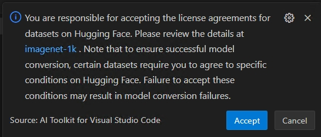</blockquote>

<ul>
<li><strong>激活类型</strong>：用于表示神经网络中每层中间输出（激活值）的数据类型。<ul>
<li><strong>权重类型</strong>：用于表示模型学习参数（权重）的数据类型。<ul>
<li><strong>量化数据集</strong>：用于量化的校准数据集。
</li>
</ul>
</li>
</ul>
</li>
</ul>
<p>      如果你的工作流使用的数据集需要在 Hugging Face 上同意许可协议（例如 ImageNet-1k），系统将提示你在数据集页面上接受条款后才能继续。这是法律合规所必需的。</p>

<ol>
<li>选择 <strong>HuggingFace Access Token</strong> 按钮以获取你的 Hugging Face 访问令牌。
</li>
</ol>
<p>          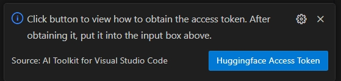</p>
<ol>
<li>选择 <strong>Open</strong> 打开 Hugging Face 网站。
</li>
</ol>
<p>          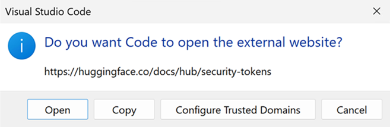</p>

<ol>
<li>在 Hugging Face 门户上获取你的令牌并粘贴到快速选取框中。按 <code>kbstyle(Enter)</code>。
</li>
</ol>
<p>          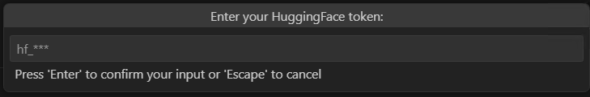</p>

<ul>
<li><strong>量化数据集分割</strong>：数据集可以有不同的分割，如验证、训练和测试。<ul>
<li><strong>量化数据集大小</strong>：用于量化模型的数据数量。
</li>
</ul>
</li>
</ul>
<p>    有关激活和权重类型的更多信息，请参阅<a href="https://onnxruntime.ai/docs/performance/model-optimizations/quantization.html#data-type-selection">数据类型选择</a>。</p>

<p>    你也可以禁用此部分。在这种情况下，工作流将仅将模型转换为 ONNX 格式，但不会量化模型。</p>

<p>    <strong>评估</strong></p>

<p>    在此部分中，你需要选择用于评估的执行提供程序（EP），无论模型是在哪个平台上转换的。</p>
<ul>
<li><strong>评估目标</strong>：你希望评估模型的目标设备。可能的值包括：<ul>
<li><strong>Qualcomm NPU/GPU</strong>：要使用此选项，你需要兼容的 Qualcomm 设备。<ul>
<li><strong>AMD NPU/GPU</strong>：要使用此选项，你需要搭载受支持的 AMD NPU/GPU 的设备。<ul>
<li><strong>Intel CPU/GPU/NPU</strong>：要使用此选项，你需要搭载受支持的 Intel CPU/GPU/NPU 的设备。</li>
<li><strong>NVIDIA TRT for RTX</strong>：要使用此选项，你需要搭载支持 TensorRT for RTX 的 Nvidia GPU 的设备。</li>
<li><strong>DirectML</strong>：要使用此选项，你需要搭载支持 DirectML 的 GPU 的设备。</li>
<li><strong>CPU</strong>：任何 CPU 均可使用。</li>
</ul>
</li>
<li><strong>评估数据集</strong>：用于评估的数据集。</li>
<li><strong>评估数据集分割</strong>：数据集可以有不同的分割，如验证、训练和测试。</li>
<li><strong>评估数据集大小</strong>：用于评估模型的数据数量。
</li>
</ul>
</li>
</ul>
</li>
</ul>
<p>    你也可以禁用此部分。在这种情况下，工作流将仅将模型转换为 ONNX 格式，但不会评估模型。</p>

<ol>
<li>通过选择 <strong>Run</strong> 运行工作流。
</li>
</ol>
<p>    系统会使用工作流名称和时间戳生成默认的作业名称（例如 <code>bert_qdq_2025-05-06_20-45-00</code>），以便于跟踪。</p>

<p>    在作业运行期间，你可以通过选择状态指示器或历史记录面板中 <strong>Action</strong> 下的三点菜单并选择 <strong>Stop Running</strong> 来<strong>取消</strong>作业。</p>

<p>    <strong>Hugging Face 合规提醒</strong>：在量化过程中，我们需要校准数据集。你可能需要在继续之前接受许可条款。如果你错过了通知，运行过程将暂停，等待你的输入。请确保通知已启用，并且你接受了所需的许可。</p>

<ol>
<li>（可选）在云端运行模型转换
</li>
</ol>
<p>    当你的本地计算机没有足够的计算或存储容量时，云端转换可让你在云端运行模型转换和量化。你需要一个 Azure 订阅才能使用云端转换。</p>

<ol>
<li>从右上方的下拉菜单中选择 <strong>Run with Cloud</strong>。</li>
</ol>
<p>        请注意，<strong>评估</strong>部分将被禁用，因为云端环境没有用于推理的目标处理器。</p>

<p>        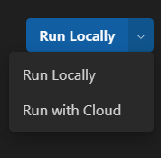</p>

<ol>
<li>Foundry Toolkit 首先检查云端转换的 Azure 资源是否已准备好。如果需要，系统将提示你提供 Azure 订阅和资源组以预配 Azure 资源。
</li>
</ol>
<p>        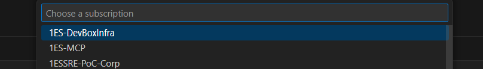</p>

<ol>
<li>预配完成后，预配配置将保存在工作区根文件夹中的 <code>model_lab.workspace.provision.config</code> 中。</li>
</ol>
<p>        此信息被缓存以重用 Azure 资源并加速云端转换过程。如果你想使用新资源，请删除此文件并再次运行云端转换。</p>

<ol>
<li>系统将触发一个 Azure 容器应用（ACA）作业来运行云端转换。对于正在运行的作业，你可以：<ul>
<li>选择状态链接导航到 Azure ACA 作业执行历史记录页面。<ul>
<li>选择 <strong>logs</strong> 导航到 Azure Log Analytics。<ul>
<li>选择刷新按钮以获取当前作业状态。
</li>
</ul>
</li>
</ul>
</li>
</ul>
</li>
</ol>
<p>        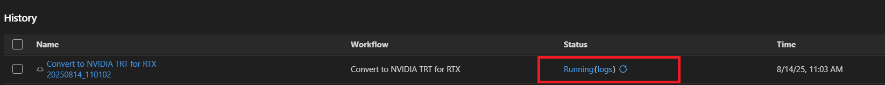</p>

<blockquote>[!TIP]</blockquote>
<blockquote>如果你没有可用的 GPU 进行 LLM 模型转换，可以使用 <strong>Run with Cloud</strong>。</blockquote>
<blockquote>Run with Cloud 选项仅支持模型转换和量化。你需要将转换后的模型下载到本地计算机进行评估。</blockquote>
<p>></p>
<blockquote>Run with Cloud 不支持使用 DirectML 或 NVIDIA TRT for RTX 工作流进行模型转换。</blockquote>

<blockquote>[!NOTE]</blockquote>
<blockquote><strong>Recommended</strong> 列将根据你的设备是否准备好运行转换后的模型来显示推荐的工作流。你仍然可以选择你偏好的工作流。</blockquote>
<blockquote><strong>模型转换和量化</strong>：你可以在除 LLM 模型之外的任何设备上运行工作流。<strong>量化</strong>配置仅针对 NPU 进行了优化。如果目标系统不是 NPU，建议取消选中此步骤。</blockquote>
<p>></p>
<blockquote><strong>LLM 模型量化</strong>：如果你想量化 <a href="#llm-模型">LLM 模型</a>，需要 Nvidia GPU。</blockquote>
<p>></p>
<blockquote>如果你想在配备 GPU 的其他设备上量化模型，可以自行设置环境，请参阅<a href="../docs/intelligentapps/reference/ManualConversionOnGPU.md">手动 GPU 转换</a>。请注意，只有"量化"步骤需要 GPU。量化后，你可以在 NPU 或 CPU 上评估模型。</blockquote>

<h3>重新评估的提示</h3>

<p>在模型成功转换后，你可以使用重新评估功能再次进行评估，而无需重新进行模型转换。</p>

<p>转到历史记录面板，找到模型运行作业。选择 <strong>Action</strong> 下的三点菜单以<strong>重新评估</strong>模型。</p>

<p>你可以选择不同的 EP 或数据集进行重新评估。</p>

<p>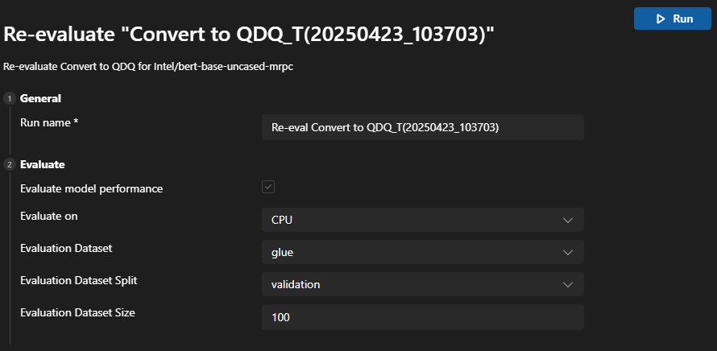</p>

<h3>作业失败的提示</h3>

<p>如果你的作业被取消或失败，你可以选择作业名称来调整工作流并再次运行作业。为避免意外覆盖，每次执行都会创建一个带有自己配置和结果的新历史记录文件夹。</p>

<blockquote>[!NOTE]</blockquote>
<blockquote>某些工作流可能要求你先登录 Hugging Face。如果你的作业失败并输出类似 <code>huggingface_hub.errors.LocalTokenNotFoundError: Token is required ('token=True'), but no token found. You need to provide a token or be logged in to Hugging Face with 'hf auth login' or 'huggingface_hub.login'</code> 的错误信息，请导航到 <https://huggingface.co/settings/tokens> 并按照说明完成登录过程，然后重试。</blockquote>
<p>></p>
<blockquote>如果你的重新评估失败并输出类似 <code>Microsoft Visual C++ Redistributable is not installed</code> 的警告信息，你需要手动安装以下软件包：</blockquote>
<blockquote>1. <a href="https://learn.microsoft.com/en-us/cpp/windows/latest-supported-vc-redist?view=msvc-170#latest-microsoft-visual-c-redistributable-version">Microsoft Visual C++ Redistributable</a></blockquote>
<blockquote>2. （ARM64 可选）从 <a href="https://visualstudio.microsoft.com/visual-cpp-build-tools/">Microsoft C++ Build Tools</a> 下载。在安装过程中还需勾选 <code>Desktop development with C++</code> 工作负载。</blockquote>

<h2>查看结果</h2>

<p><strong>Conversion</strong> 中的历史记录面板是你跟踪、查看和管理所有工作流运行的中心仪表板。每次运行模型转换和评估时，都会在历史记录面板中创建一个新条目——确保完整的可追溯性和可复现性。</p>

<ul>
<li>找到你要查看的工作流运行。每次运行都列有状态指示器（例如 Succeeded、Cancelled）。</li>
<li>选择运行名称以查看转换配置。</li>
<li>选择状态指示器下的 <strong>logs</strong> 以查看日志和详细的执行结果。</li>
<li>模型成功转换后，你可以在 Metrics 下查看评估结果。每次运行旁边会显示准确率、延迟和吞吐量等指标。
</li>
</ul>
<p>  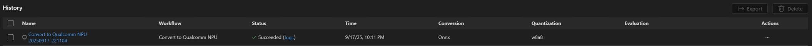</p>

<ul>
<li>你可以选择 <strong>Action</strong> 下的三点菜单与转换后的模型进行交互。
</li>
</ul>
<p>  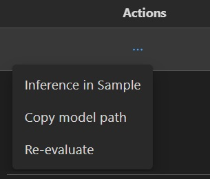</p>


<h3>复制转换后的模型路径</h3>

<ul>
<li>从下拉菜单中选择 <strong>Copy model path</strong>。输出转换后的模型路径如 <code>c:/{workspace}/{model_project}/history/{workflow}/model/model.onnx</code> 将被复制到剪贴板供你参考。对于 LLM 模型，将复制输出文件夹。
<h3>使用示例笔记本进行模型推理</h3>

</li>
<li>从下拉菜单中选择 <strong>Inference in Sample</strong>。</li>
<li>选择 Python 环境<ul>
<li>系统将提示你选择一个 Python 虚拟环境。</li>
</ul>
</li>
</ul>
<p>  默认运行时为：<code>C:\Users\{user_name}\.aitk\bin\model_lab_runtime\Python-WCR-win32-x64-3.12.9</code>。</p>
<ul>
<li>请注意，默认运行时包含所需的一切，否则，请手动安装 requirements.txt。</li>
<li>示例将在 Jupyter Notebook 中启动。你可以自定义输入数据或参数来测试不同的场景。
<blockquote>[!NOTE]</blockquote>
<blockquote>对于使用云端转换的模型，在状态变为 <strong>Succeeded</strong> 后，选择云下载图标将输出模型下载到本地计算机。</blockquote>
<blockquote>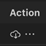</blockquote>
</li>
</ul>
<p>></p>
<blockquote>为避免覆盖任何现有的本地文件（如配置或历史记录相关文件），只会下载缺失的文件。如果你想下载干净的副本，请先删除本地文件夹，然后重新下载。</blockquote>

<blockquote>[!TIP]</blockquote>
<blockquote><strong>模型兼容性：</strong>确保转换后的模型支持推理示例中指定的 EP。</blockquote>
<p>></p>
<blockquote><strong>示例位置：</strong>推理示例与运行产物一起存储在历史记录文件夹中。</blockquote>

<h3>导出并与他人共享</h3>

<p>转到历史记录面板。选择 <strong>Export</strong> 将模型项目共享给他人。这会复制不包含历史记录文件夹的模型项目。如果你想与他人共享模型，请选择相应的作业。这会复制包含模型及其配置的所选历史记录文件夹。</p>

<h2>使用 Windows ML CLI 构建（预览）</h2>

<p>除了基于 Olive 的转换工作流之外，Foundry Toolkit 还提供了由 <a href="https://github.com/microsoft/winml-cli">Windows ML CLI</a> 驱动的精简<strong>构建</strong>流程。Olive 配方侧重于 EP 驱动的优化工作流，而 Windows ML CLI 则提供了适用于 Windows ML 的精简跨 EP 开发工作流。你无需手动组装优化配方，而是可以使用 Windows ML CLI 通过 Windows PC 上简化的命令行体验来转换、分析、优化、验证和基准测试模型。除了从 Hugging Face 转换模型外，Windows ML CLI 还可以直接在 Windows PC 上分析、优化、验证和基准测试现有的 ONNX 模型。</p>

<h3>选择 Windows ML CLI 基础模型</h3>

<p>当你创建新的模型项目（或向现有项目添加模型）时，<strong>Choose a Base Model</strong> 页面会显示一个由 Windows ML CLI 驱动的 <strong>Recommend Process</strong> 区域：</p>

<p>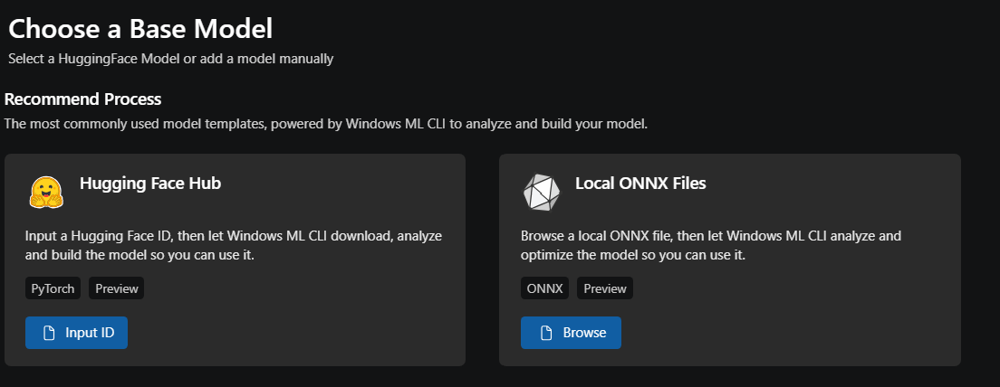</p>

<ul>
<li><strong>Hugging Face Hub</strong>：提供 Hugging Face 模型 ID（例如 <code>microsoft/resnet-50</code>），Windows ML CLI 将自动下载、转换、分析和优化模型。</li>
<li><strong>Local ONNX Files</strong>：浏览到磁盘上的 ONNX 文件，让 Windows ML CLI 对其进行分析和优化。
</li>
</ul>
<p>你还可以选择已经过 Windows ML CLI 验证的精选 Hugging Face 模型。打开 <strong>Provided By</strong> 筛选器并选择 <strong>Windows ML CLI</strong> 以查看支持的列表。</p>

<p>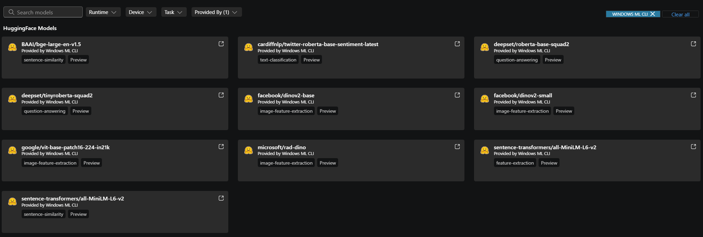</p>

<blockquote>[!NOTE]</blockquote>
<blockquote>通过 Windows ML CLI 生成的模型可以在 Windows ML 支持的所有执行提供程序（EP）上运行。支持的 EP 包括：</blockquote>
<p>></p>
<blockquote>- QNN（NPU、GPU）</blockquote>
<blockquote>- OpenVINO（CPU、NPU、GPU）</blockquote>
<blockquote>- VitisAI（NPU）</blockquote>
<blockquote>- NVIDIA TensorRT RTX（GPU）</blockquote>
<blockquote>- DirectML（DML）（GPU）</blockquote>
<blockquote>- CPU</blockquote>

<blockquote>[!NOTE]</blockquote>
<blockquote>对于使用 <strong>Hugging Face Hub</strong> 或 <strong>Local ONNX Files</strong> 模板的"自带模型"场景，Windows ML CLI 目前仅支持经典深度学习模型。LLM 支持即将推出。</blockquote>

<h3>运行构建流程</h3>

<p>项目打开后，<strong>Run Workflows</strong> 面板会为每个选定的 Windows ML CLI 模型显示一个 <strong>Build Flow</strong> 卡片。</p>

<p>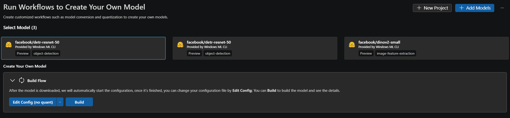</p>

<p>首次进入时的行为取决于模型添加到项目的方式。</p>

<h4>内置模型</h4>

<p>内置模型已包含经过验证的 Windows ML CLI 工作流配置。这些精选模型附带为 Windows ML EP 优化的预构建 Build Config 文件。Build Flow 卡片直接以 <strong>Configured</strong> 状态打开——不会运行自动配置。选择 <strong>Edit Config</strong> 查看准备好的配方，然后选择 <strong>Build</strong>。</p>

<h4>按 ID 添加的 Hugging Face 模型</h4>

<p>按 ID 添加的 Hugging Face 模型在首次进入时自动处理。卡片会经历以下状态转换：</p>

<ul>
<li><strong>Configuring</strong>：Windows ML CLI 检查 Hugging Face 上的模型并生成构建配置。</li>
<li><strong>Configured</strong>：配置已就绪。</li>
<li><strong>Failed</strong>：无法完成配置。卡片会内联显示失败信息，并显示 <strong>Re-config</strong> 按钮（位于 <strong>Edit Config</strong> 左侧），使你无需离开工作流即可重试。
<blockquote>[!NOTE]</blockquote>
<blockquote><strong>Failed</strong> 配置状态通常意味着无法将模型自动映射到支持的优化或验证工作流。这可能发生在以下情况：</blockquote>
</li>
</ul>
<p>></p>
<blockquote>- 模型架构尚未受支持，</blockquote>
<blockquote>- 缺少必需的模型元数据，或</blockquote>
<blockquote>- ONNX 图包含不受支持的运算符。</blockquote>

<blockquote>[!NOTE]</blockquote>
<blockquote>自动配置仅在首次进入按 ID 添加的 Hugging Face 模型时运行，或在你明确选择 <strong>Re-config</strong> 后运行。工具包不会自行重试失败的配置，因此你可以检查日志并决定何时重试。</blockquote>

<p><strong>步骤 1：生成构建配置</strong></p>

<p>Windows ML CLI 查询 Hugging Face，自动检测任务和模型类型，并自动生成 Build Config JSON 文件。在引导过程中，Windows ML CLI 会生成三种配置变体：</p>

<ul>
<li><code>config-noquant.json</code></li>
<li><code>config-w8a16.json</code></li>
<li><code>config-w8a8.json</code>
</li>
</ul>
<p>它们之间的主要区别是量化策略：</p>

<ul>
<li><strong>No Quant</strong> — 全精度模型。</li>
<li><strong>W8A16</strong> — 8 位权重，16 位激活值。</li>
<li><strong>W8A8</strong> — 8 位权重，8 位激活值，以实现更积极的压缩和性能优化。
</li>
</ul>
<p><strong>步骤 2：自定义配置</strong></p>

<p>你可以在运行构建管道之前自定义工作流。典型的自定义领域包括任务类型、编译目标和精度细节。默认情况下，<strong>Compile</strong> 设置为 <code>null</code>。你可以使用目标 EP 自定义 <strong>Compile</strong>。</p>

<p><strong>步骤 3：运行构建</strong></p>

<p>选择 <strong>Build</strong> 会按顺序运行所有四个管道阶段：</p>

<ol>
<li>导出</li>
<li>优化</li>
<li>量化</li>
<li>编译
</li>
</ol>
<p>工作流读取 <code>config*.json</code> 中记录的设置。构建步骤之后，Windows ML CLI 会自动生成一个声明性的 <code>build_config.json</code> 文件，该文件定义了工作流的端到端运行方式。你可以通过 <strong>View Config</strong> 检查并进行自定义。这种声明式配置模型使得将 Windows ML CLI 集成到具有可复现和可移植构建工作流的 CI/CD 管道中变得容易。</p>

<p>Windows ML CLI 还会生成分析报告，你可以通过 <strong>View Analysis</strong> 打开。分析结果提供详细的模型兼容性见解，包括 Windows ML EP 中受支持的运算符、部分受支持的运算符和不受支持的运算符。在分析过程中，Windows ML CLI 会自动检查 ONNX 图，检测优化模式，并生成推荐的 Windows ML 优化工作流。</p>

<h4>本地 ONNX 模型</h4>

<p>对于本地 ONNX 模型，构建工作流会自动分析 ONNX 图并生成推荐的 Windows ML 优化工作流。因为输入已经是 ONNX 模型，Windows ML CLI 会跳过<strong>导出</strong>阶段，直接从模型优化开始。默认情况下，<strong>Build</strong> 配置也会跳过<strong>量化</strong>和<strong>编译</strong>阶段——你可以稍后自定义它们。</p>

<p>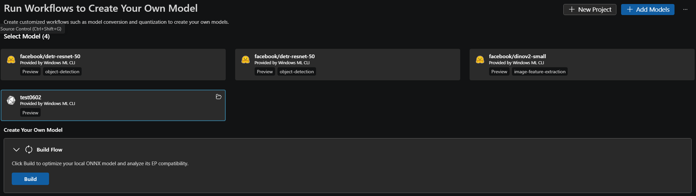</p>

<h3>检查构建、评估和性能结果</h3>

<p>每次构建运行都会在 <strong>Generated Flow History</strong> 表中生成一个条目。你可以从中：</p>

<ul>
<li>选择 <strong>View Config</strong> 打开用于运行的配置文件。</li>
<li>选择 <strong>View Analysis</strong> 打开 EP 兼容性分析。</li>
<li>选择 <strong>Performance</strong> 针对选定的 EP 启动性能运行，并在表中直接查看设备、延迟和吞吐量结果。</li>
<li>选择 <strong>Evaluation</strong> 运行质量评估。评估仅适用于<strong>内置模型</strong>，这些模型附带准备好的评估数据集和指标。
</li>
</ul>
<p>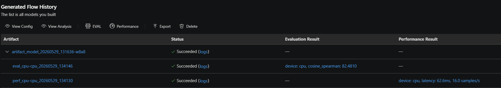</p>

<h2>你学到了什么</h2>

<p>在本文中，你学习了如何：</p>

<ul>
<li>在 Foundry Toolkit for VS Code 中创建模型转换项目。</li>
<li>配置转换工作流，包括量化和评估设置。</li>
<li>运行转换工作流，将预构建的模型转换为优化的 ONNX 模型。</li>
<li>查看转换结果，包括指标和日志。</li>
<li>使用示例笔记本进行模型推理和测试。</li>
<li>导出并与他人共享模型项目。</li>
<li>使用不同的执行提供程序或数据集重新评估模型。</li>
<li>处理失败的作业并调整配置以重新运行。</li>
<li>了解支持的模型及其转换和量化的要求。</li>
<li>使用 Windows ML CLI 流程构建 Hugging Face 或本地 ONNX 模型。
<h2>另请参阅</h2>

</li>
<li><a href="../docs/intelligentapps/reference/ManualConversionOnGPU.md">如何手动设置 GPU 转换</a></li>
<li><a href="../docs/intelligentapps/reference/SetupWithoutAITK.md">如何手动设置环境</a></li>
<li><a href="../docs/intelligentapps/reference/TemplateProject.md">如何自定义模型模板</a></li>
<li><a href="../docs/intelligentapps/reference/UpdateModelProject.md">如何更新模型项目</a></li>
<li><a href="../docs/intelligentapps/reference/FileStructure.md">转换文件结构</a></li>
</ul>

  </div>
</div>
<script>function ts(id){var e=document.getElementById(id),t=e.previousElementSibling;e.classList.contains("collapsed")?(e.classList.remove("collapsed"),t.classList.remove("collapsed")):(e.classList.add("collapsed"),t.classList.add("collapsed"))}function toggleAll(v){document.querySelectorAll(".sidebar-section-content,.sidebar-sub-content").forEach(function(e){v?e.classList.remove("collapsed"):e.classList.add("collapsed")});document.querySelectorAll(".sidebar-section-title,.sidebar-sub-title").forEach(function(e){v?e.classList.remove("collapsed"):e.classList.add("collapsed")})}</script>
</body>
</html>